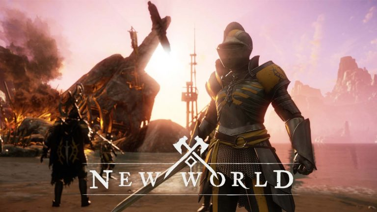

New World

La guerra es el pináculo de JcJ en New World: épicas guerras de asedio a escala masiva, con equipos de 50 jugadores de atacantes y defensores luchando por el control y la victoria. El resultado de cada guerra determina qué compañía controla el territorio o los asentamientos disputados, lo cual convierte esto en una lucha por el futuro de Aetérnum.